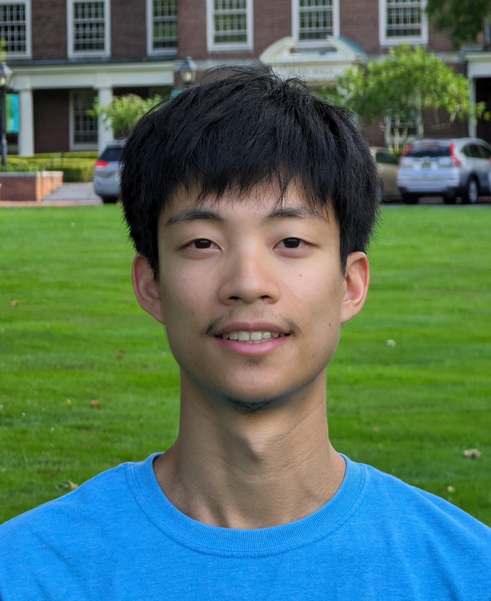

Hi! I'm a third year PhD student in the Program in Applied and Computational Mathematics at Princeton University, where I'm fortunate to be advised by Pravesh K. Kothari. Prior to this, I graduated from UC Berkeley in 2023 with a B.S. in Electrical Engineering and Computer Science, where I was fortunate to work with Avishay Tal, Ellen Vitercik, and Manolis Zampetakis.
Coding theory, average-case algorithms, proof complexity, extremal combinatorics.
I am/have been a Teaching Assistant for the following courses:
MAT 478/577: The Probabilistic Method (Spring 2026)
MAT 321: Numerical Analysis and Scientific Computing (Fall 2025)
MAT 378: Theory of Games (Spring 2025)
MAT 103: Calculus I (Fall 2024)
CS C191: Quantum Information Science and Technology (Spring 2023)
EECS 127/227AT: Optimization Models in Engineering (Spring 2021, Fall 2021, Spring 2022)
CS 70: Discrete Mathematics and Probability Theory (Summer 2020)
Email: andrewlin AT princeton DOT edu
Office: Fine Hall 216